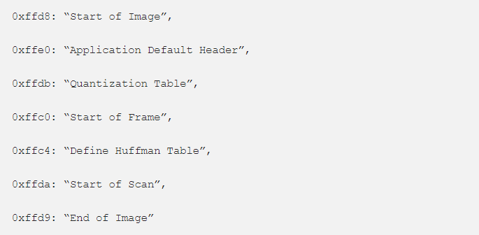

Just like PNG, JPEG, and DOC are valid file types, polyglots are a combination of two different file types. For example Phar + JPEG (PHP archive and JPEG file), GIFAR (Gif and Rar file) Javascript + JPEG, etc.
Applications allow only certain file types on features like file upload and don't allow other file types like .php or .js files as these can enable the attacker to upload malicious files on the application. Applications perform extension filtering checks like double extensions(.jpg.php) or use of null bytes in extension(.php%00.jpg), file names (.htaccess, .config, etc..), and if the uploaded file's signature also matches its content type.
The different application uses different methods and polyglots can be used to bypass some of these validation checks.
A JPEG image is represented as a sequence of segments where each segment begins with a header. Each header starts with some byte. The payload followed by the header is different as per header type. Common JPEG marker types are as listed below:
Every binary file contains a couple of headers. They are very important for a file as they define specific information of a file. Most of the headers are followed by length information. This tells us how long that particular segment is.
The start of the image header contains FF D8. If we don't see it we can assume this is some other file. Another important marker is FF D9 which tells the end of the image.
To make the payload look like a legitimate JPEG file, we will add the length of the header, comment header, null byes to pad and then our javascript attack vector.Let's say the attack vector is */=alert("XSS")/* Converting it into hexadecimal will look like this.
2A 2F 3D 61 6C 65 72 74 28 22 58 53 53 2E 22 29
We can use a hex-editor to inject javascript in the image metadata. This works because the browsers interpret the code when they render the image into HTML.
I've got an image test.jpg and below is the hexdump of test.jpg. With the help of ghex editor, we are going to replace some hex chars and save them.
As we know the first FF D8 is the start of the image, the next two bytes represent the upcoming two bytes, 00 10 represents the length of the JPEG header which in decimal equivalent is 16 bytes.
We are going to inject our payload in between FF E0 and FF DB . Let's start with 2F 2A which is hex representation of /*

If you notice we just replaced 00 10 previously with 2F 2A and the decimal equivalent of hex 2F 2A is 12074 bytes. So now the image header is changed from 16 bytes to 12074 bytes.
From the screenshot above, we can see the size of our payload is 18 bytes so we have to pad out the remaining bytes with nulls that is 12074-16-18=12040 bytes.
The above commands will read the test.jpg, insert our payload in between 2F 2A FF DB changes the hex into buffer, add 12040 null bytes and write it to the file test_new.jpg. Now in the ghex editor close the comment tag before FF D9
On Firefox when using a UTF-8 character set for the document it corrupts the polyglot when included as an script! So to get the script to work we need to specify the ISO-8859-1 charset on the script tag and it executes fine.
Let's test it in the browser.
Our javascript/jpeg polyglot works!
Update: Mozilla fixed this in firefox 51 and after versions.
I will update this page soon...
Share with your friends if you found it interesting.
------------------------------------- Thank you for reading ^_^ ---------------------------------